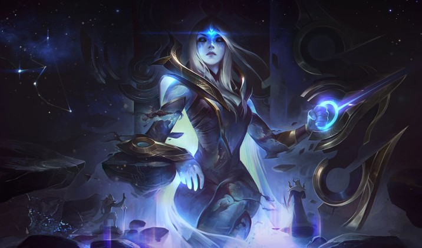

Les Archimages de l'Ozaive
Organisation :
L'organisation est en réalité le pilier de Thylathhils, ayant un grand impact dans les domaines religieux et politiques.
Dirigeant :
Les archimages marchent par un système démocratique, bien que les plus anciens soient plus influents.
Nombres de membres :
Une dizaine de membres, plus les apprentis qui serviront de génération suivante.
Mots d'ordre :
"Le savoir et la maîtrise de l'immatériel doivent être parfaites, mais en des mains assurées".
Recrutement :
Des apprentis ayant de grandes compétences et un potentiel inexploité rejoignent les rangs des archimages pour faire murir leurs facultés.
Lieu de rassemblement :
La Tour de Cristal
Si la magie est commune au sein de l’Yndrill, les archimages de Thylathhils dominent de loin ses autres détenteurs. Ces derniers, principalement constitués d’elfes lunaires, vivant au sein de la Tour de Cristal de l’Ozaive, maîtrisent avec perfection les arcanes et rédigent une quantité astronomique d’ouvrages répertoriant différents sorts et différentes sources d’énergie exploitables. Leur savoir en sa globalité, ne peut en aucun cas devenir possession d’un seul être, le nombre de millénaires requis par l’apprentissage étant lui-même inatteignable pour un peuple immanent.
Bien que la communauté des archimages soit relativement fermée, il arrive qu’un individu extérieur, présentant les facilités et la motivation requise, devienne apprentis durant de longues années pour assurer la nouvelle génération. De plus, le gouvernement de Thylathhils consulte bien souvent les sages pour leur demander assistance et écouter de leurs oreilles pointues les conseils qu’ils peuvent leur offrir.
Néanmoins, la règle première du conseil est limpide ; jamais en cas de guerre ou de conflits, ils n’offriront leurs services à un camp, car la magie est un art avant d’être une arme, qu’elle permet de penser et de changer le monde, autrement par l’odeur calcinée d’une charogne et un air imbibé par l’étincelle.
Puisse Astra offrir le don des étoiles à ses serviteurs, ou plutôt, à ceux qui sauront faire autre intérêt de son usage que se hisser en haut de l’échelle sociale…